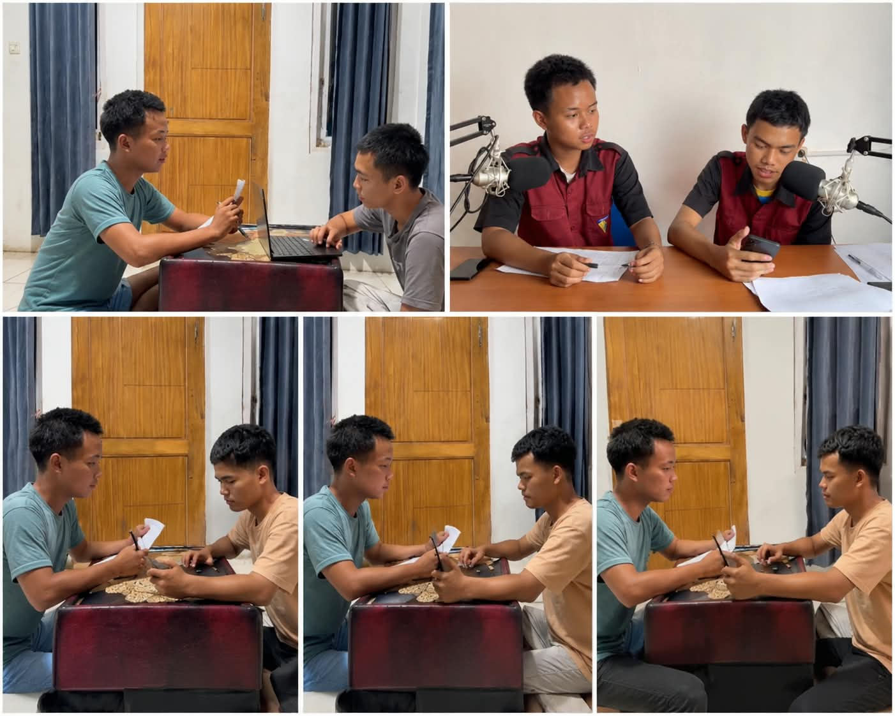

Evaluasi Usability Website
SMAN 16 Bekasi.
Penelitian dan evaluasi pengalaman pengguna untuk meningkatkan kemudahan akses informasi, kenyamanan, dan kualitas layanan digital SMAN 16 Bekasi.
Lihat Studi Kasus →Permasalahan dan Tujuan Penelitian
Website sekolah merupakan media informasi digital yang membantu siswa, guru, orang tua, dan masyarakat mendapatkan informasi mengenai sekolah.
Penelitian ini bertujuan mengevaluasi kemudahan penggunaan website SMAN 16 Bekasi serta menemukan bagian yang perlu diperbaiki berdasarkan pengalaman pengguna.
UX Research
Mengidentifikasi kebutuhan dan pengalaman pengguna.
Usability Testing
Mengevaluasi kemudahan penggunaan website.
UI Improvement
Membuat rekomendasi perbaikan tampilan website.
Identitas Penelitian
| Keterangan | Informasi |
|---|---|
| Objek Penelitian | Website SMAN 16 Bekasi |
| Bidang | UX Research & UI Design |
| Metode | Usability Testing dan SEQ |
| Peneliti | Dede Sandy |
| Periode | Oktober-November 2026 |
| Tools | Visual Studio Code, Figma, Google Forms |
Alur Pengerjaan
Proses penelitian dilakukan melalui beberapa tahapan untuk memperoleh hasil evaluasi yang terstruktur.
Pengujian Pertama
Menganalisis website dan mengumpulkan pendapat pengguna.
Desain Ulang
Menyusun rancangan antarmuka berdasarkan hasil evaluasi.
Card Sorting 1 — Struktur Website
Card sorting digunakan untuk memahami bagaimana pengguna mengelompokkan informasi yang terdapat pada website sekolah.
| Kategori | Kartu / Isi Website | Catatan |
|---|---|---|
| Profil | Sejarah, Visi, Misi | Perlu dievaluasi |
| Akademik | Informasi pembelajaran | Perlu dievaluasi |
| Kesiswaan | Ekstrakurikuler, kegiatan siswa | Perlu dievaluasi |
| Informasi | Berita, pengumuman, kontak | Perlu dievaluasi |
Pengujian SEQ
Single Ease Question (SEQ) merupakan metode untuk mengetahui tingkat kemudahan pengguna dalam menyelesaikan suatu tugas pada website.
Skala Penilaian
1 = Sangat Sulit
2 = Sulit
3 = Cukup Sulit
4 = Netral
5 = Cukup Mudah
6 = Mudah
7 = Sangat Mudah
Wawancara Pengguna
Wawancara dilakukan untuk mengetahui pendapat pengguna mengenai tampilan, navigasi, dan informasi pada website.
Contoh Pertanyaan
- Apakah informasi sekolah mudah ditemukan?
- Apakah navigasi website mudah dipahami?
- Bagian mana yang perlu diperbaiki?
- Apakah tampilan website nyaman digunakan?

Desain Mockup Website
Mockup merupakan rancangan visual website SMAN 16 Bekasi yang menampilkan susunan halaman, warna, tipografi, dan elemen antarmuka.
Prototype Interaktif
Prototype merupakan rancangan website yang dapat dijelajahi melalui tombol, menu, dan navigasi interaktif.
🎨 Prototype Figma
Masukkan tautan prototype desain SMAN 16 Bekasi.
Perbaikan dari Pengujian Pertama
Perbaikan dilakukan berdasarkan hasil evaluasi dan masukan dari pengguna.
Navigasi
Menyusun menu agar lebih mudah dipahami.
Informasi
Memperjelas akses informasi sekolah.
Tampilan
Meningkatkan konsistensi desain antarmuka.
Yang Saya Pelajari
01. Pentingnya Pengalaman Pengguna
Website yang baik tidak hanya memiliki tampilan menarik, tetapi juga harus mudah digunakan.
02. Memahami Kebutuhan Pengguna
Masukan pengguna membantu menemukan kekurangan yang mungkin tidak terlihat oleh pembuat website.
03. Evaluasi dan Perbaikan
Pengujian ulang diperlukan untuk mengevaluasi perubahan yang telah dilakukan.